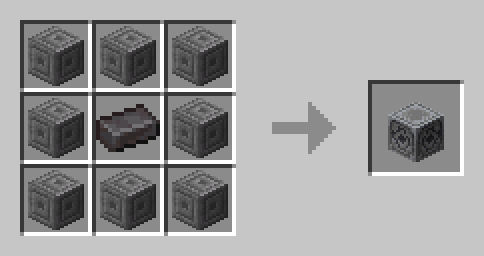
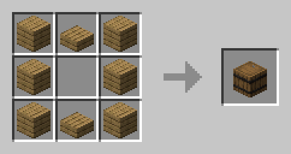
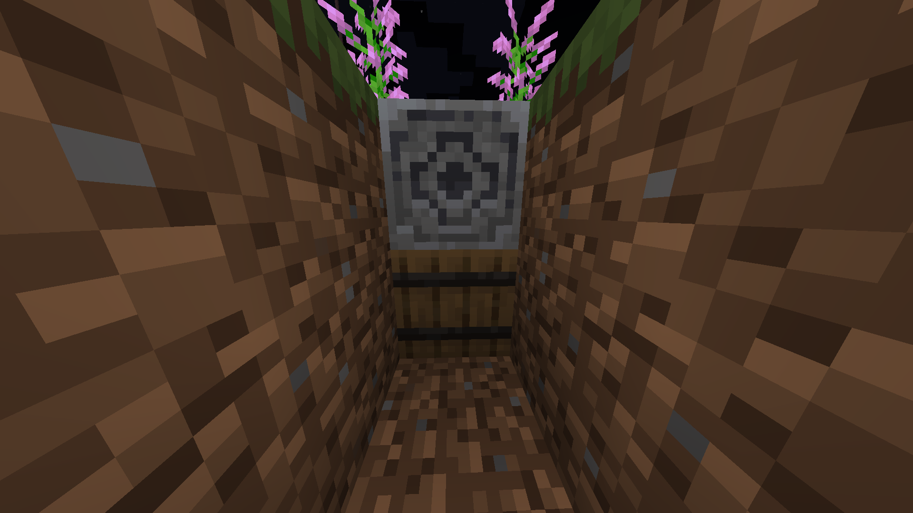
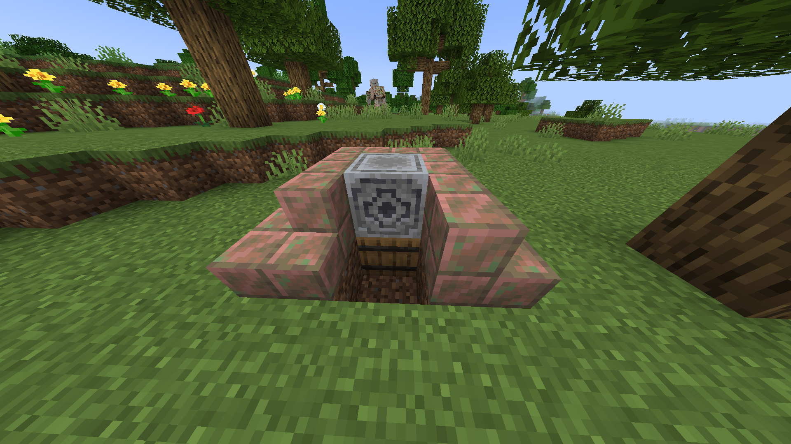
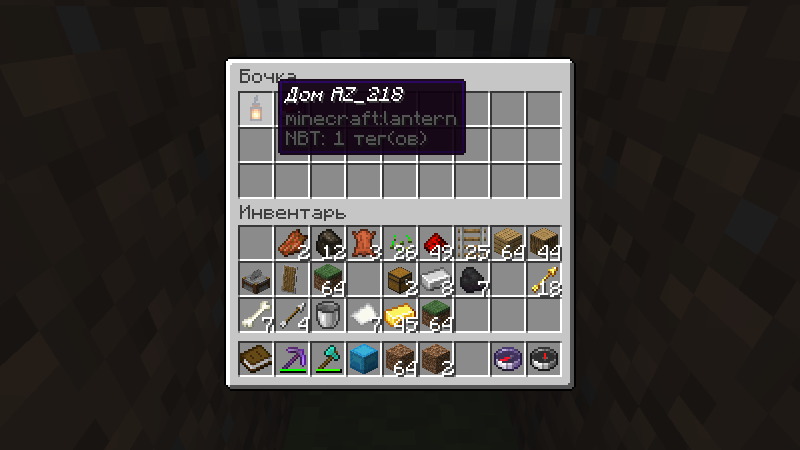
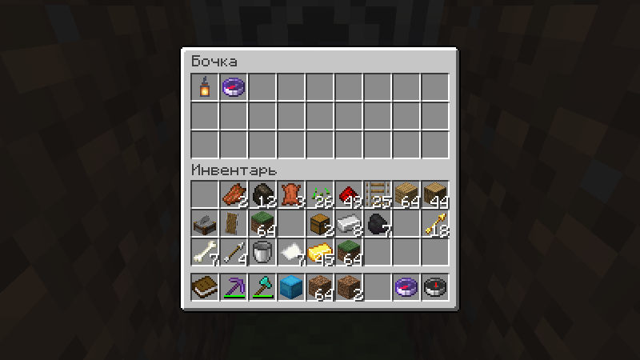
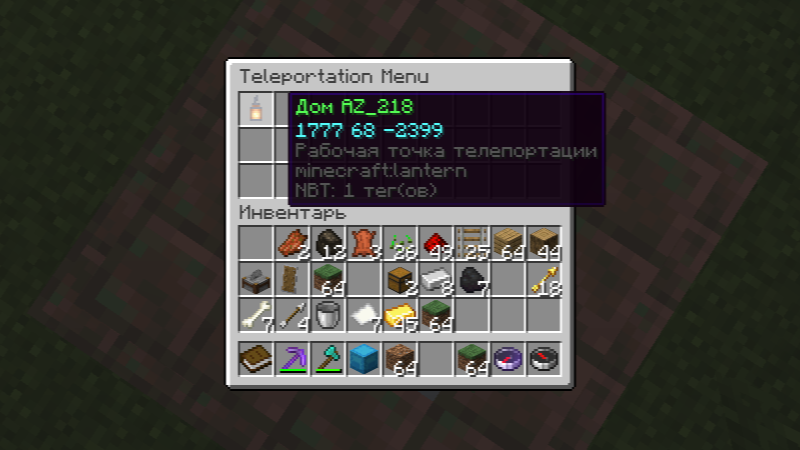

- Правила игры: перейти по ссылке
- Новые крафты: перейти по ссылке
- Система варпов: перейти к пункту
- Дальность чатов: перейти к пункту
-
Обычный чатПросто напишите свое сообщение, вас услышат все в радиусе 100 блоков
-
Глобальный чатВас услышат абсолютно все, необходимо написать ! перед сообщением
-
Близкий чатВас услышат все в радиусе 10 блоков, необходимо написать ? перед сообщением
-
Личный чатСообщение напрямую игроку, использовать команду /tell или /msg
-
Как крафтитьНеобходимые блоки для постройки варпа: магнетит и бочка 
-
Как строитьУстановите магнетит над бочкой 
-
Как настраиватьОни не будут работать просто так, было бы слишком просто. Также необходимость настройки даёт возможность делать приватные варпы.Для начала поместите в первый слот (именно первый) бочки любой переименованный предмет - это иконка и имя точки телепортацииПосле чего положите намагниченные компасы: именно с их помощью ищутся другие точкиТеперь во всех варпах, в которых есть компас указывающий на вашу точку будет отображаться кнопка, при нажатии на которую вы будете телепортированы
-
ДополнительноВы можете сделать имя своей точки цветным - добавьте & перед hex-кодом цвета (0-F)